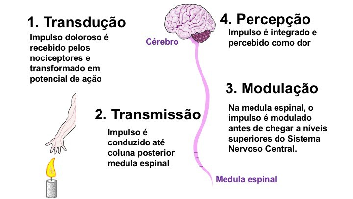

Ao abordar a fisiologia da dor, é preciso compreender o percurso realizado desde o momento do estímulo até a percepção, a qual irá permitir que a dor seja efetivamente sentida e percebida na sua localização específica/região. Os mecanismos fisiológicos da dor envolvem conceitos de sensibilização periférica e neuroplasticidade na perpetuação da dor, com ação através de mediadores bioquímicos nas vias nociceptivas. Pode-se estabelecer correlações entre inflamação, dor e status psicológico. Desse modo, pode-se afirmar que a dor chega ao córtex cerebral através de cinco fases: I) Transdução; II) Condução; III) Transmissão; IV) Percepção; V) Modulação.